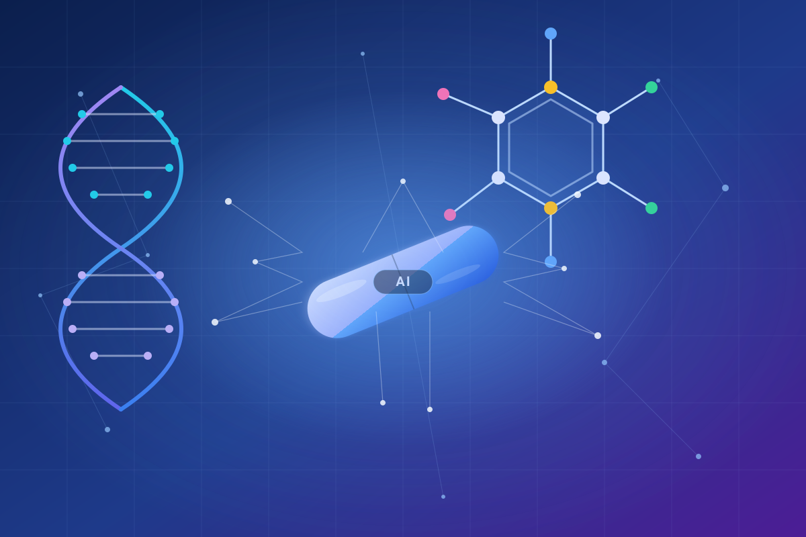
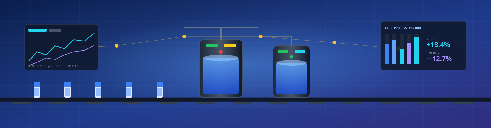
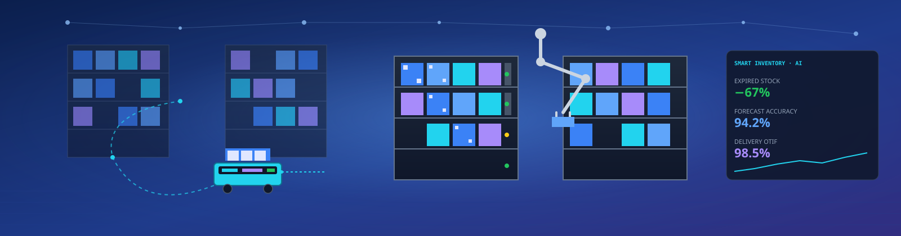
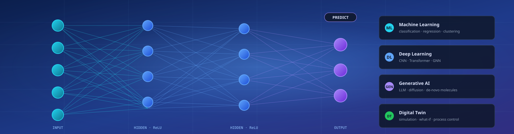
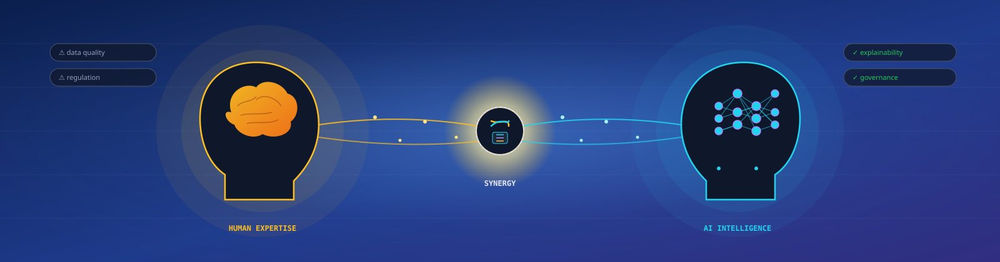

Трансформация Фармацевтической Отрасли
Как искусственный интеллект оптимизирует ресурсы и сокращает затраты на всех этапах разработки и производства лекарств

$28 млрд
Годовая экономия на клинических испытаниях
50-80%
Сокращение сроков испытаний
15-20%
Экономия энергии в производстве
Резюме
Искусственный интеллект (ИИ) трансформирует фармацевтическую отрасль, предоставляя мощные инструменты для сокращения расходов и потребления ресурсов на всех этапах жизненного цикла лекарственных средств. В клинических испытаниях ИИ может сократить сроки на 50-80% и снизить стоимость на 70%, автоматизируя управление данными и оптимизируя набор пациентов.
В производстве ИИ-решения снижают энергопотребление на 15-20%, предотвращают брак партий и повышают выход продукции. В логистике ИИ оптимизирует цепочки поставок, сокращая транспортные расходы и минимизируя потери. На этапе открытия лекарств генеративный ИИ ускоряет идентификацию и оптимизацию молекул, сокращая процесс с лет до месяцев.
Ключевой вывод: Несмотря на барьеры в виде качества данных и регуляторных вопросов, ИИ становится ключевым драйвером устойчивого развития отрасли, обеспечивая более быстрый, экономичный и персонифицированный доступ к инновационным препаратам.
1. Клинические Испытания: Сокращение Временных и Финансовых Затрат
Клинические испытания представляют собой наиболее длительный и дорогостоящий этап в разработке новых лекарственных средств, часто занимая до 60% общего времени и бюджета на создание препарата и требуя инвестиций свыше 400 миллионов долларов на фазу 396. Искусственный интеллект (ИИ) внедряется как трансформационная технология, способная радикально оптимизировать этот процесс.
Экономический потенциал
Анализ отраслевых данных показывает, что ИИ может сократить общую продолжительность клинических испытаний на 30-50% и снизить их стоимость до 40% 375. По оценкам, глобальная экономия от внедрения ИИ только на этапе клинических испытаний может достигать 28 миллиардов долларов ежегодно 396 414.
1.1. Оптимизация Дизайна Испытаний и Управление Данными
Автоматизация биостатистики
Агенты ИИ могут автономно выполнять задачи по проектированию EDC-систем, мониторингу качества данных и разрешению запросов. Компания Saama утверждает, что ее платформа может сэкономить до 90 минут на идентификации одного запроса 376.
Генерация документации
Merck совместно с McKinsey разработала платформу на основе генеративного ИИ, которая сократила время создания CSR с 2-3 недель до 3-4 дней, уменьшив количество ошибок на 50% 404.
1.2. Повышение Эффективности Набора Пациентов
Набор пациентов является одним из основных узких мест в клинических испытаниях. Около 80-90% испытаний сталкиваются с трудностями в наборе участников 381 375. ИИ решает эту проблему, анализируя большие объемы реальных данных.
Кейс: Mass Bio's Synergy AI
Платформа увеличила количество подходящих кандидатов в 1.82 раза по сравнению с ручными методами, сократив время скрининга с 19,500 часов ручной работы до нескольких часов автоматизированного анализа 370.
1.3. Количественные Показатели Экономии
Потенциал радикальных изменений
Некоторые отраслевые исследования показывают, что ИИ-инструменты могут сократить продолжительность испытаний на 80% и снизить их стоимость на 70% 402 407. Сокращение срока клинической разработки всего на 12 месяцев может добавить более чем 400 миллионов долларов к NPV портфеля спонсора 403.
2. Производство и Производственные Процессы: Снижение Энергопотребления и Отходов
Интеграция ИИ в производственные процессы фармацевтической отрасли открывает значительные возможности для сокращения эксплуатационных расходов, минимизации потребления ресурсов и повышения общей эффективности. ИИ предлагает решение, позволяющее перейти от реактивного к проактивному управлению 505 508.

2.1. Оптимизация Производственных Параметров
Мониторинг в реальном времени
ИИ анализирует данные с датчиков для мгновенного отслеживания температуры, pH, влажности и автоматической корректировки параметров 513.
Предиктивная аналитика
ML-модели предсказывают отклонения и брак партий, позволяя переходить от реактивного к проактивному подходу 508.
Повышение выхода
Pfizer увеличила производительность на 20% за счет оптимизации производственных процессов с помощью ИИ 345.
2.2. Снижение Энергопотребления
Реальные кейсы энергоэффективности
| Компания | Применение | Результаты |
|---|---|---|
| Merck KGaA | Оптимизация чиллерной станции | Снижение на 15-20% |
| Guangdong Yifang | Управление HVAC и сжатым воздухом | Экономия 20.5% и 13.36% |
| BrainBox AI | Оптимизация HVAC | Снижение CO2 на 95 тонн/год |
2.3. Автоматизация Контроля Качества
Автоматизированная визуальная инспекция
Системы на основе глубокого обучения точно идентифицируют дефекты таблеток и капсул, работая с постоянной точностью и скоростью. Нейронные сети, такие как UNet, анализируют рентгеновские томограммы для выявления внутренних дефектов 529.
Предиктивное обслуживание
ИИ анализирует данные с датчиков для предсказания отказов оборудования. Pfizer внедрила подобные системы, что позволило сократить время простоя и расходы на обслуживание 513.
3. Логистика и Управление Цепочкой Поставок
Фармацевтическая цепочка поставок — это сложная и высокорегулируемая система, требующая точного управления запасами, эффективной логистики и надежного мониторинга условий хранения. ИИ предоставляет мощные инструменты для оптимизации всех аспектов цепочки поставок.

3.1. Оптимизация Управления Запасами
Кейс: Novartis
Источник: Внедрение платформы машинного обучения для прогнозирования спроса
3.2. Оптимизация Транспортировки
Оптимизация маршрутов
ИИ-алгоритмы оптимизируют логистические маршруты, учитывая пробки, погоду, тарифы на топливо и ограничения по времени. Johnson & Johnson достигла сокращения транспортных расходов на 20% благодаря оптимизации маршрутов и загрузки транспортных средств.
Контроль холодовой цепи
ИИ в сочетании с IoT-датчиками обеспечивает непрерывный мониторинг температуры и влажности, минимизируя потери продукции.
3.3. Снижение Потерь и Отходов
Минимизация потерь продукции
ИИ анализирует данные о сроке годности и условиях хранения, рекомендуя приоритетную отгрузку партий с более коротким сроком годности (FIFO/FEFO).
Сокращение выбросов CO2
Эффективные маршруты приводят к снижению расхода топлива. BrainBox AI помогла снизить выбросы CO2 на 95 метрических тонн в год 140.
4. Открытие Лекарств и Доклинические Исследования
ИИ трансформирует самые ранние этапы фармацевтической разработки — открытие новых молекул и доклинические исследования. Традиционный процесс открытия лекарств является чрезвычайно длительным, дорогостоящим и высокорискованным.
4.1. ИИ в Первичном Связывании и Виртуальном Скрининге
Ускорение открытия в 3 раза
Российская компания "Р-Фарм" сообщила, что трехлетний этап поиска и оптимизации лекарственных кандидатов был ускорен в три раза — до одного года с помощью ИИ 23.
4.2. Генеративный ИИ для Дизайна Новых Молекул
Создание новых структур
Генеративные модели, такие как VAE и GAN, могут генерировать новые, ранее несуществовавшие молекулы, которые соответствуют заданным критериям — высокой активности, хорошей фармакокинетике и отсутствию токсичности.
Оптимизация лидерных соединений
Генеративный ИИ ускоряет процесс оптимизации, предлагая конкретные химические модификации, которые, по прогнозам, приведут к улучшению нужных характеристик.
Кейсы успешных компаний
Exscientia
Первая компания, запустившая в клинические испытания молекулы, полностью спроектированные ИИ
Insilico Medicine
Открыла новую мишень и разработала лидерное соединение за 18 месяцев — впечатляющий срок по сравнению с многолетним процессом традиционного открытия 57
4.3. Предсказательная Токсикология и Безопасность
ИИ предлагает мощные инструменты для предсказания побочных эффектов и токсикологических свойств молекул in silico, сокращая необходимость в дорогостоящих и этически сложных экспериментах на животных.
Модели ADMET
ИИ-модели прогнозируют критически важные фармакологические свойства — абсорбцию, распределение, метаболизм, экскрецию и токсичность. Это позволяет отбрасывать небезопасные соединения на ранней стадии.
Сокращение испытаний на животных
Проводя виртуальный скрининг на токсичность, исследователи могут сосредоточить дорогостоящие исследования in vivo только на наиболее безопасных кандидатах, отвечая принципам 3R.
5. Ключевые Подходы и Технологии ИИ в Фармацевтике
Фармацевтическая отрасль использует широкий спектр подходов и технологий ИИ для решения разнообразных задач. От классических методов машинного обучения до передовых генеративных моделей и интеграции с цифровыми двойниками.

5.1. Машинное Обучение и Глубокое Обучение
Прогнозирование и классификация
Методы ML/DL широко применяются для прогнозирования параметров производства, результатов клинических испытаний, активности и токсичности молекул. Классификационные модели автоматизируют визуальный контроль качества.
Анализ больших данных
ML/DL предоставляет инструменты для анализа огромных объемов данных, генерируемых на всех этапах разработки, выявляя скрытые закономерности, недоступные традиционным методам.
Области применения ML/DL
- Прогнозирование выхода продукции и вероятности брака
- Анализ электронных медицинских карт для поиска пациентов
- Прогнозирование токсичности и активности молекул
- Анализ потоковых данных с датчиков IoT
5.2. Генеративный ИИ и Большие Языковые Модели
Генерация документации
Модели, такие как GPT, генерируют черновики клинических протоколов, отчеты о безопасности и регламентные досье, сокращая время написания на десятки процентов.
Пример: Merck сократила время создания CSR с 180 до 80 часов, снизив ошибки на 50%.
Создание гипотез
LLM анализируют научную литературу, выявляя неочевидные связи между генами, белками и заболеваниями, предлагая новые терапевтические мишени.
Результат: ИИ становится активным партнером в научных исследованиях, а не просто инструментом анализа.
5.3. Интеграция ИИ с IoT и Цифровыми Двойниками
Цифровые двойники
Виртуальные модели физических процессов, обновляемые в реальном времени. Позволяют моделировать и тестировать различные сценарии без вмешательства в реальное производство.
Пример: Johnson & Johnson использует цифровых двойников для оптимизации производства.
ИИ + IoT
ИИ-алгоритмы анализируют потоковые данные от IoT-датчиков, создавая "умные" фабрики и лаборатории, где системы могут автономно реагировать на изменения.
Результат: Стабильное качество и максимальная эффективность.
6. Барьеры и Перспективы Внедрения ИИ
Несмотря на огромный потенциал, внедрение ИИ в фармацевтическую отрасль сталкивается с рядом барьеров. Преодоление этих вызовов и развитие синергии между человеческой экспертизой и возможностями ИИ будут определять будущее устойчивого развития отрасли.

6.1. Основные Барьеры и Вызывающие Вопросы
Качество, доступность и фрагментация данных
ИИ-модели требуют огромных объемов высококачественных, хорошо структурированных данных. В фармацевтике данные часто фрагментированы, могут быть "грязными" или неполными. Обеспечение доступа к данным при соблюдении конфиденциальности и GDPR остается главной проблемой.
Решение: Разработка стандартов данных, систем управления качеством и федеративных подходов к обучению моделей.
Регуляторные и этические аспекты ("Черный Ящик")
Многие модели ИИ функционируют как "черный ящик", что вызывает опасения в регулируемой отрасли. FDA и другие органы требуют валидации и объяснимости ИИ-систем.
Решение: Разработка интерпретируемого ИИ (XAI) и создание регуляторных рамок для валидации ИИ-систем.
Недостаток квалифицированных кадров
Существует глобальный дефицит специалистов, сочетающих знания в области фармацевтики, данных и ИИ. Автоматизация вызывает обеспокоенность по поводу потенциального сокращения рабочих мест.
Решение: Программы переподготовки, непрерывного обучения и развитие гибридных команд людей и машин.
6.2. Будущие Направления и Заключение
Переход к персонифицированной медицине
ИИ является ключевым драйвером перехода к персонифицированной медицине. Анализируя мультиомные данные, ИИ может предсказывать, какие пациенты наилучшим образом отреагируют на конкретное лечение.
Результат: Улучшение исходов для пациентов и снижение затрат на неэффективные терапии.
Синергия ИИ и человеческой экспертизы
ИИ не заменит человеческих экспертов, а станет их мощным инструментом. Будущая рабочая сила будет состоять из "центавров" — гибридных команд людей и машин.
Преимущество: Синергия вычислительной мощности ИИ и креативности, интуиции человека.
Заключение
Искусственный интеллект стоит на пороге радикальной трансформации фармацевтической отрасли. От ускорения клинических испытаний и оптимизации производства до революционизирования открытия лекарств, ИИ предлагает решения для сокращения затрат, экономии ресурсов и ускорения инноваций. Успешное внедрение ИИ сделает разработку новых лекарств более быстрой, дешевой и эффективной, в конечном итоге обеспечивая более широкий и быстрый доступ пациентов к жизненно важным препаратам. ИИ — это не просто новая технология; это фундаментальный строительный блок для более устойчивого и здорового будущего.